This example, allows showing the potential of RS MINERVE for equipped basins. The model starts with the previous model built in Example 2 and adds a hydropower scheme as well as a supplementary basin with an intake. The complete model is presented in Figure 18.1.
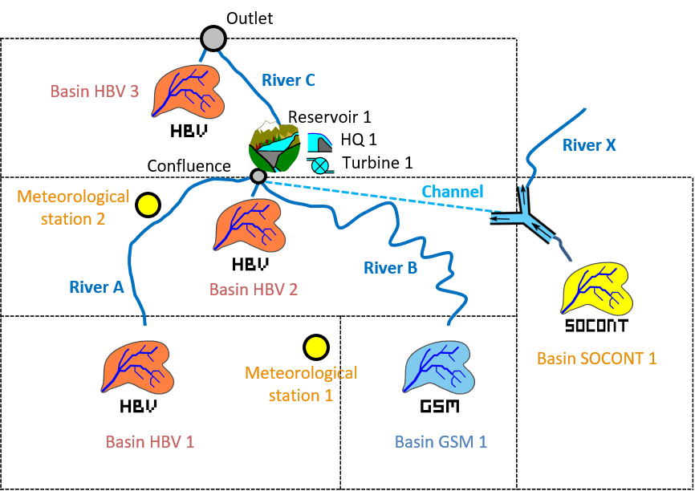
HBV 1, HBV 2 and GSM 1 basins flow through the Reservoir 1. Intake located downstream of a SOCONT model provides supplementary discharge up to 2 m3/s. It is assumed that the propagation in the channel is insignificant and thus it is not necessary to include it in the model (in other case, we could built it with the Reach Kinematic object).
The reservoir includes a turbine and a spillway. The turbine generates electricity as long as it is possible for a capacity of 1 m3/s. These two reservoir outflows flow in the River C up the outlet, where they are joined by the production of HBV 3 sub-basin. All the parameters of the different objects are provided in Figure 18.2 and Figure 18.3. The temperature and precipitation data are in the database “Database manual”. A uniform and null ETP is assumed for this example (the user can check the selected ETP method in the RS MINERVE settings).
18.1 Objective of Example 3
Part A
The wanted result for this example is the inflow in the reservoir, the spillway discharge and the hydrograph in the outlet of the model for the period between the 08.05.2013 00:00 and the 15.05.2013 00:00 (as well as the peak discharge and the peak time).
Part B
Second issue aims to know if the reservoir could be managed in order to reduce the peak in the outlet of the system. The objective of this extension is to implement a facility to release water for preventive purposes.

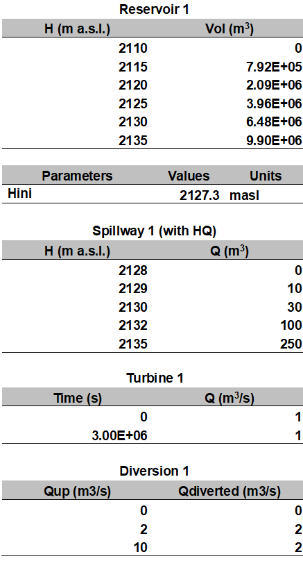
Additionally, initial discharge (\(Qini\)) of River C is in this case 1 m3/s.
18.2 Resolution of Example 3 – Part A
In the first place, the model of the Example 2 is opened. The connection between the “Confluence” and the River C is erased and objects Virtual Weather Station 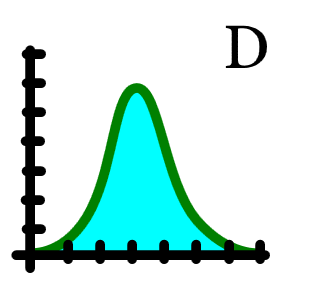, SOCONT , Reservoir 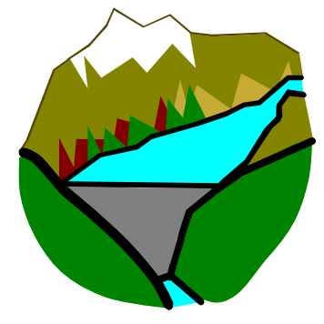, Spillway 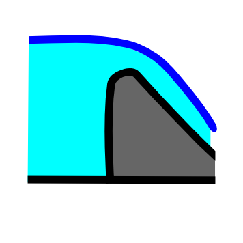, Turbine 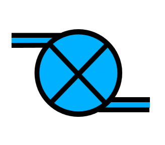 and Junction 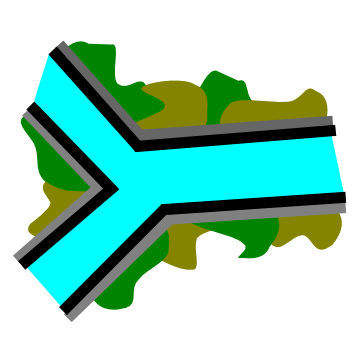 are added, as presented in Figure 18.4.
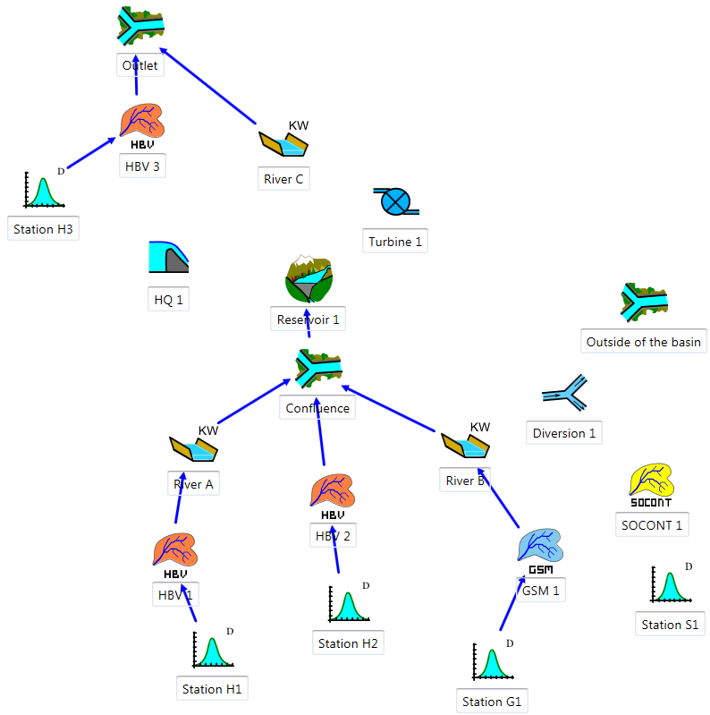
New objects are always linked from upstream to downstream (e.g.: SOCONT 1 to Diversion 1, Diversion 1 to Confluence (\(Qdiverted\)) and to Outside of the Basin (\(Qdown\)), Reservoir 1 to HQ 1, Reservoir 1 to Turbine 1, Turbine 1 to River C, etc). After creating the links (Figure 18.5), the news relations can be visualized by double clicking on each blue arrow (Figure 18.6 to Figure 18.9).
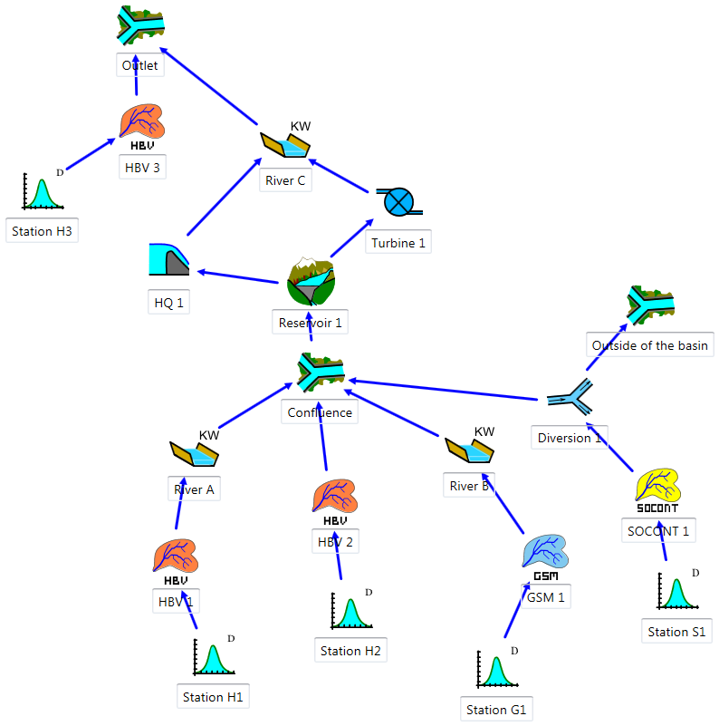
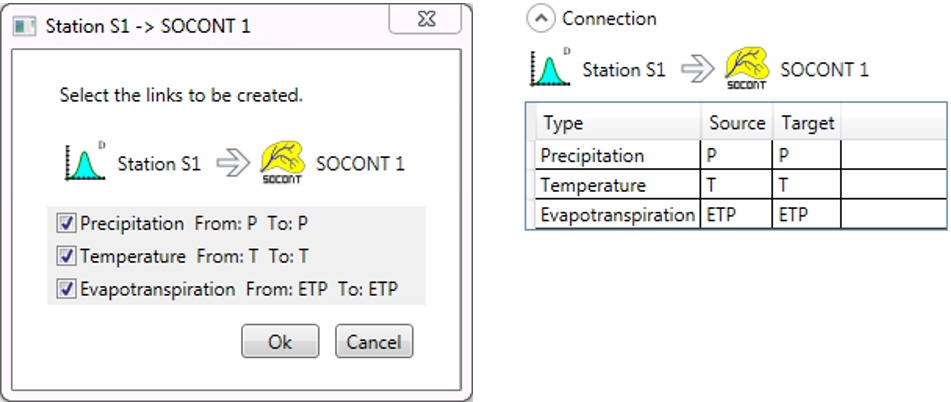
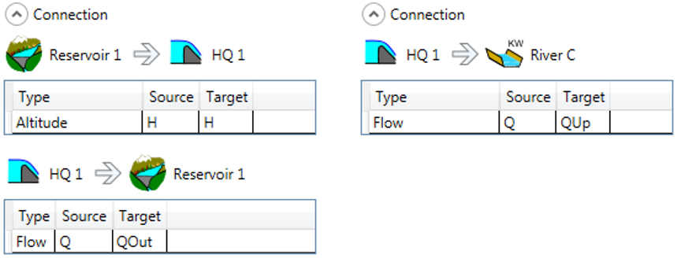
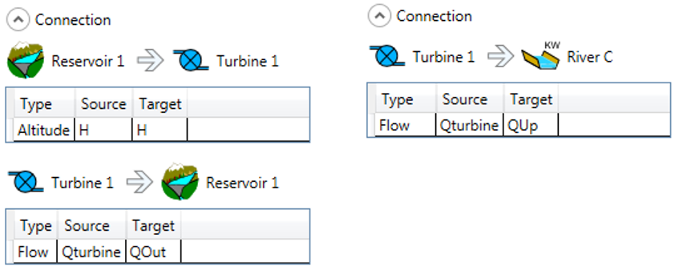
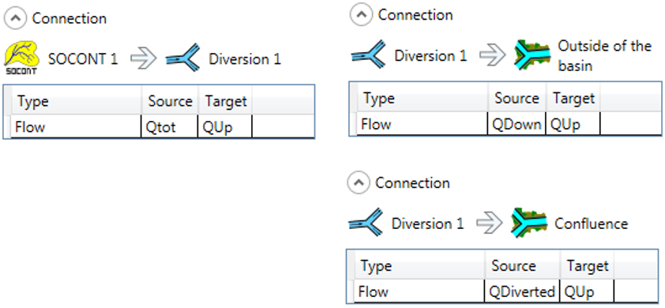
The introduced parameters of new objects Diversion 1, Reservoir 1, HQ 1 and Turbine 1 are presented in Figure 18.10 to Figure 18.13.
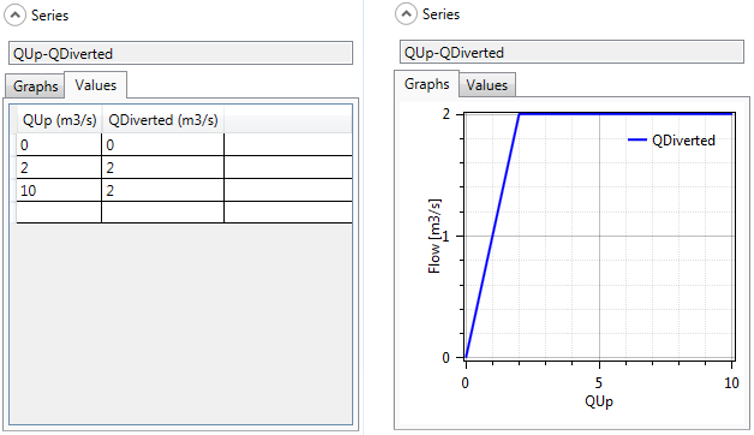
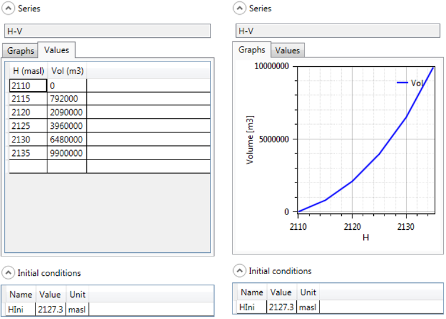
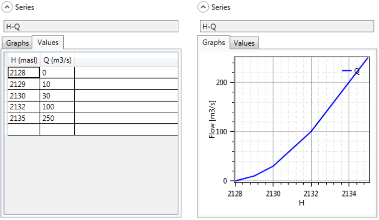
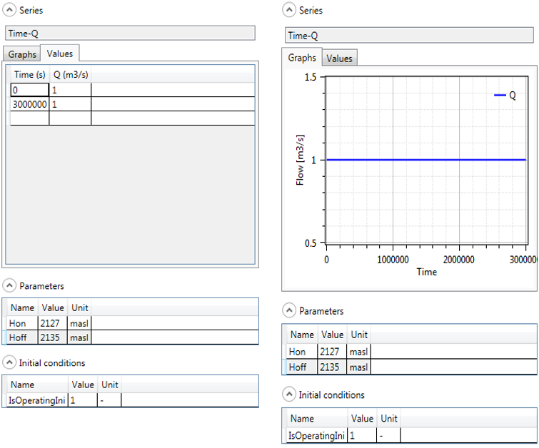
As shown in Figure 18.13, the thresholds in the level of the reservoir to start (2127 masl) and to stop (2110 masl) the turbine cycle, as well as the first suggested value for the turbine cycle (1 = turbine) have to be introduced.
Once the construction finished, it can be saved clicking in the button  and giving a name to the .rsm file (e.g. “Example3.rsm”).
and giving a name to the .rsm file (e.g. “Example3.rsm”).
Before starting the calculation, the meteorological data have to be loaded: the dialog box of the database is opened clicking in Open for loading the corresponding database file (“Database manual”). The user can click on the Database tab to visualize or modify the series of the database (Figure 17.15).
Once the database loaded, the user can connect the database to the hydrological model. For achieving this purpose, the user has to choose the correct data source in the corresponding frame (Figure 18.14): the group “Measure” and the dataset “DataSet Example 2and3” for the current example. It is not necessary to fill up the data sources of the reservoir as it will take the default value for the simulation.
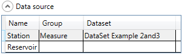
Finally, the necessary parameters of the simulation are chosen in the menu Solver frame according to the propose dates in the wording. The other values (time intervals) stay as indicate in the program, being 600 s in both cases.
If the pre-simulation validation allows to valid the model (with the message: “Model ‘Example 3’ is valid”), the simulation can be initiated clicking in the button Start.
18.3 Results of Example 3 – Part A
All the results can be visualized by double clicking in the corresponding object. Figure 18.15 presents the hydrograph at the system outlet.
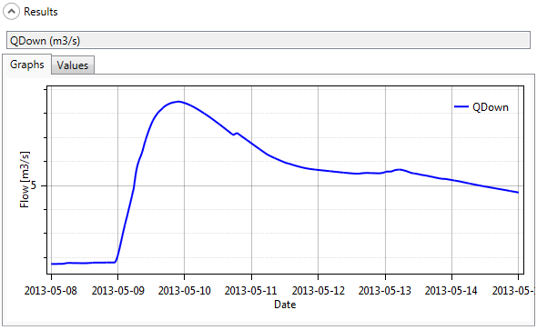
The peak discharge arrives on May the 9th, 2013 at 21:40 and the peak discharge is equal to 8.482 m3/s.
To summarize the simulated balance of Reservoir 1, an analysis of inputs/outputs in the Reservoir 1 is realized with the “Selection and plots” module. The inflow into the Reservoir 1 (Confluence), the spillway discharge (HQ 1), the turbine flow (Turbine 1), the total flow at the downstream of the reservoir (River C, \(Qup\)) and the reservoir level evolution (Reservoir 1) are presented in Figure 18.16. Despite the turbine, the reservoir level reached its maximal fill rating with an overflow which lasted several days. At the end of the simulation, the reservoir level comes around 90 cm above the initial level.
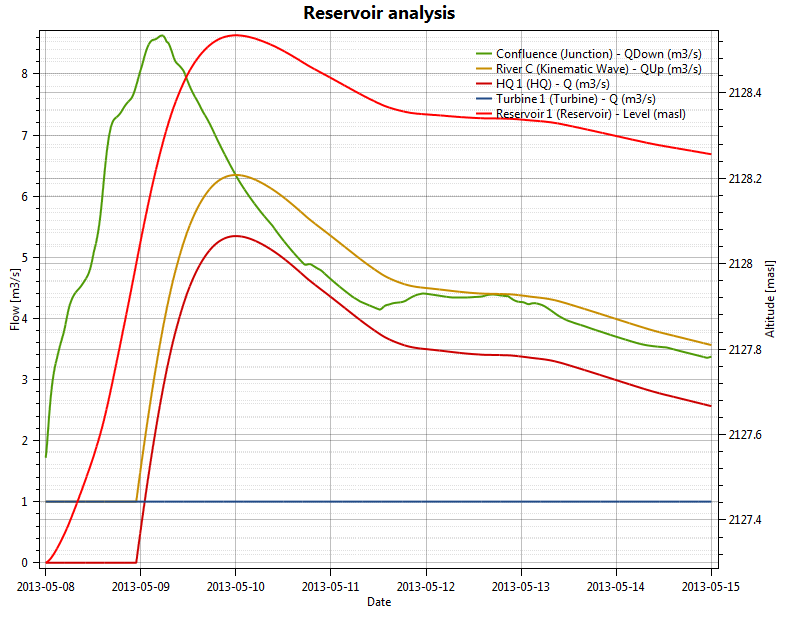
18.4 Resolution of Example 3 – Part B
In order to create an outlet or a facility for releases, one way is to define a turbine connected to the reservoir (Figure 18.17). We create a new turbine (Turbine 2) and make the connections from the reservoir to the new turbine and from the turbine to River C. Also we create a time series element connected to the new turbine where we will define the releases from the reservoirs.
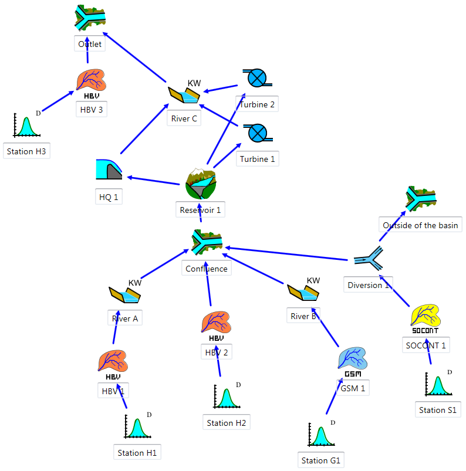
Notice that actually the new turbine is representing a sluice of the reservoir.
Once the model has been adapted we have to define the preventive releases in the corresponding Turbine 2. Analyzing the results of the example one can think that preventive release should start near 13h00 of first day and finish eleven hours later.
As in the time series we have to define time in seconds (0 seconds corresponds to the start time of the simulation), the start is at 46800 s and the end at 86400 s. Moreover, it is considered that the release must take place only when the level in the reservoir exceeds 2128 masl, and stops when it is under 2125 masl.
The value of the releases depends on the capacity of the sluice and the decision of the manager. In this case, a discharge of 5 m3/s is defined, as presented in Figure 18.18.
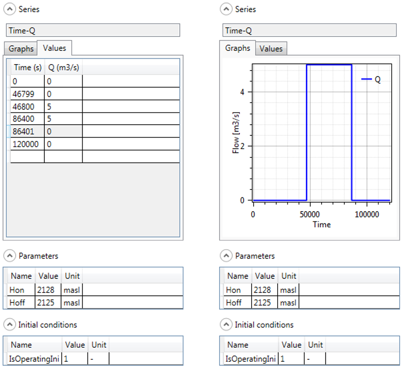
New objects are linked as before, from upstream to downstream, obtaining same relations, as presented in Figure 18.19.
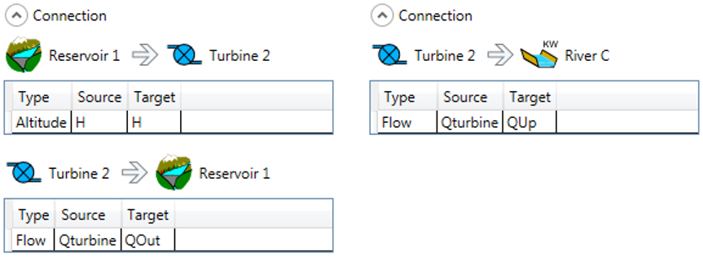
18.5 Results of Example 3 – Part B
In the following Figure 18.20 we can see the new flows of the outlet and other variables. As it can be seen the peak is reduced to less than 8 m3/s due to the preventive releases at the outlet of the model (Figure 18.20). Moreover, with the extra releases, we have created a first artificial peak.
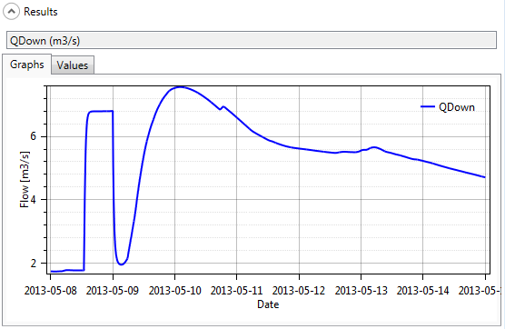
Maximum water level on the reservoir, 2128.473 m a.s.l., is at this case smaller than without the extra release of Part A (maximum water level of the part A was 2128.467 m a.s.l.).
To compared this results with the results of Part A, same results are presented, i.e., an analysis of inputs/outputs in the Reservoir 1. The inflow into the Reservoir 1 (Confluence), the spillway discharge (HQ 1), the turbine flows (Turbine 1 and Turbine 2), the total flow at the downstream of the reservoir (River C, \(Qup\)) and the reservoir level evolution (Reservoir 1) are presented in Figure 18.21.
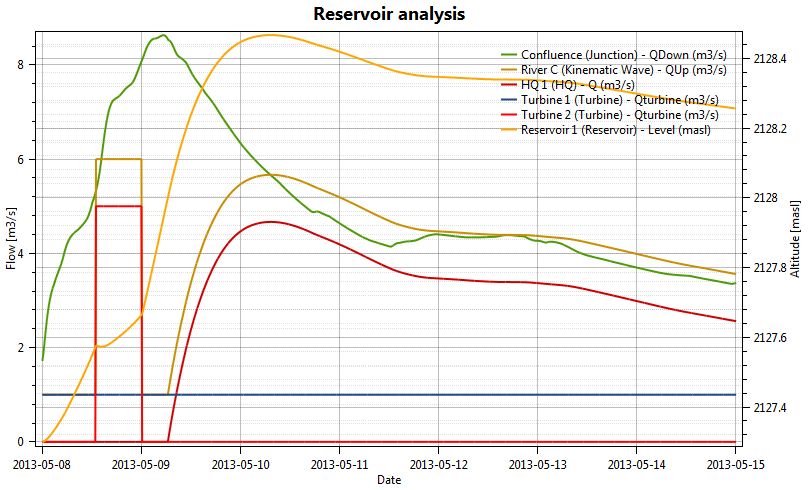
Although the objective has achieved, many issues emerge from the management of the reservoir. How much water do we have to release? Are we aggravating the situation downstream? How much energy will we lose if the flood is not as important as expected? And so on.